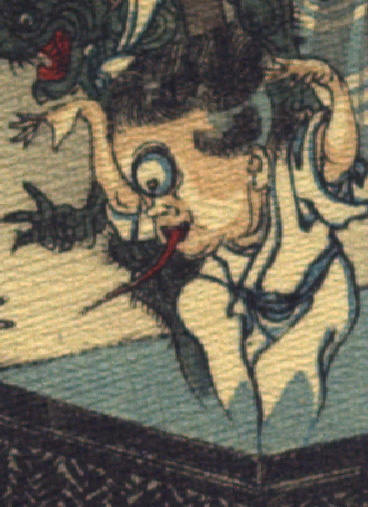

一つ目の化物。髪は短いおかっばにし、後頭部は青く剃り上げている。頭部が大きく、額の真ん中に大きな目玉が一つつき、白目は青く光っている。口から赤く長い舌を伸ばしている。白い着物をまとって、両腕を開いて上げ、おどすように手を上からかざしている。
出典：親書誌：U426_nichibunken_0109：Le moineau qui a la langue coupée／日付：2006／資源識別子：U426_nichibunken_0109_0008_0002
Copyright (c)2010- International Research Center for Japanese Studies, Kyoto, Japan. All rights reserved.